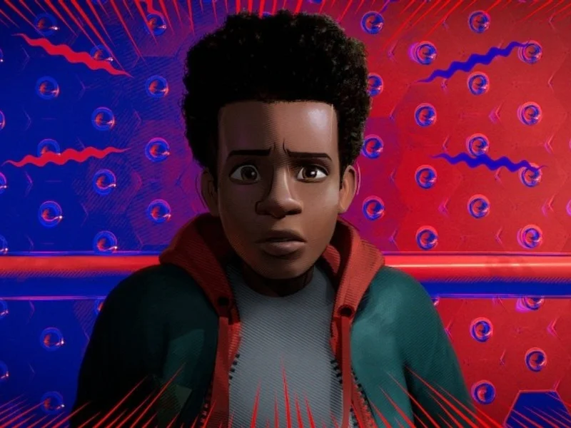

Miles Morales é um adolescente que ganha poderes após ser picado por uma aranha modificada. Quando o Rei do Crime ativa uma máquina que abre portais entre dimensões, diferentes versões do Homem-Aranha acabam indo parar em seu universo. Com a ajuda deles, Miles precisa aprender a controlar suas habilidades, assumir a responsabilidade do manto e impedir que a colisão entre os universos destrua toda a realidade.
Esse filme retrata um outro Homem Aranha, um outro personagem. Gosto muito da personalidade e gostos do Miles, que se diferenciam do Peter Parker. Inclusive, usar o Peter Parker como um professor é incrivel, ver um personagem perfeito passando a sua sabedoria a outro homem aranha. Miles equilibra seus poderes com responsabilidade na cena do "salto de fé", é muito bom. E em questões técnicas o filme se destaca, e muito!

Voltar